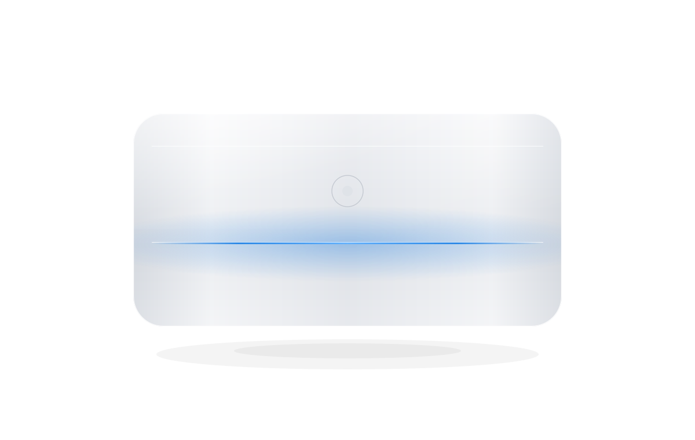
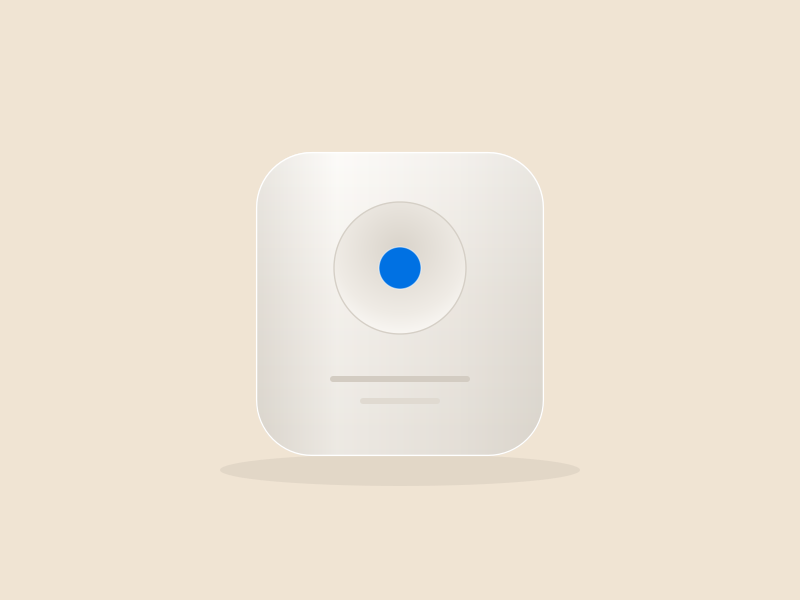

Prozess-Audit
Wir nehmen Ihre Abläufe auf und rechnen nach. Am Ende steht eine Liste: Das lohnt sich, das nicht, und warum. Kein Anbieter, der Lizenzen verkauft, wird Ihnen diese Liste schreiben.
Wovon wir abratenKI-Agentur · Hamburg & remote
Werkzeuge gibt es genug. Die Frage ist, welcher Vorgang sich überhaupt lohnt — und was davon im Betrieb hält.
Wir fangen beim Vorgang an, nicht bei der Technik. Audit ab 4.900 €.

112
Prozesse geprüft
38
davon automatisiert
74
davon abgeraten — mit Begründung
Prozesse geprüft für Teams aus Industrie, Handel, Kanzleien und SaaS.
Leistungen
Sondern bei dem Vorgang, der Sie Zeit kostet. Was sich nicht rechnet, bauen wir nicht — das ist keine Floskel, sondern der Grund, warum zwei von drei geprüften Prozessen bei uns ohne Automatisierung herausgehen.
Wir nehmen Ihre Abläufe auf und rechnen nach. Am Ende steht eine Liste: Das lohnt sich, das nicht, und warum. Kein Anbieter, der Lizenzen verkauft, wird Ihnen diese Liste schreiben.
Wovon wir abratenAgenten und Automatisierungen — aber erst nach dem Audit. Inklusive der letzten zwanzig Prozent: Sonderfall, Ausnahme, der Beleg, der nicht ins Schema passt. Genau daran sterben Automatisierungen.
So läuft das abERP, CRM, DMS, Postfach — auch dort, wo es keine saubere Schnittstelle gibt. Wo kein API ist, hilft kein Werkzeug. Dann bauen wir den Weg, den Ihr System zulässt. Ein Systemwechsel ist nie Voraussetzung.
Arbeiten ansehenÜberwachung, Auswertung, Nachschärfen — und Schulung, damit Ihr Team dem Ergebnis traut und die Regeln selbst anpassen kann. Ein Werkzeug haftet nicht. Wir stehen für das Ergebnis gerade.
Preise ansehenVorgehen
01
1 Woche
Wir nehmen Ihre Abläufe auf, beziffern die Potenziale und legen einen Fahrplan vor. Häufigstes Ergebnis: Zwei von drei Vorgängen gehen ohne Automatisierung heraus — manchmal reicht es, ein Formular zu ändern.
02
2 Wochen
Ein echter Anwendungsfall, an Ihren echten Daten. Sie sehen früh, was der Agent kann und wo er nachfragen muss.
03
4 Wochen
Integration in Ihre Systeme, Freigabewege, Schulung, Übergabe. Mit Dokumentation, die Ihr Team auch ohne uns versteht.
04
laufend
Überwachung, monatliche Auswertung, Weiterentwicklung. Wir sehen, wenn ein Agent schlechter wird — bevor Sie es merken.
Arbeiten
Steuerkanzlei · 40 Mitarbeitende
12.000 Belege im Monat werden automatisch erkannt, zugeordnet und vorkontiert. Der Agent legt selbst fest, wann er sich unsicher ist — nur diese Fälle landen noch auf einem Schreibtisch.
71 %
weniger Handgriffe
9 Tage
kürzerer Monatsabschluss
Maschinenbau · Sondermaschinen
Der Agent liest die Anfrage, zieht Stücklisten und Preise aus dem ERP und legt ein fertiges Angebot zur Freigabe vor. Der Vertrieb prüft und schickt — statt zu tippen.
2 Std.
statt 3 Tagen bis zum Angebot
2,4×
mehr Anfragen bearbeitet

SaaS · B2B-Support
Antwortentwürfe kommen aus der eigenen Dokumentation, mit Quellenangabe. Freigabe bleibt beim Menschen — die Kundin merkt nur, dass es schneller geht.
+18
Punkte CSAT
4 Min.
durchschnittliche Erstantwort
Wovon wir abraten
Automatisierung ist kein Selbstzweck. Diese drei Vorgänge hätten wir bauen können — es hätte sich nicht gerechnet. Zwei davon hatten schon ein Budget.
Großhandel
Vier Freigabestufen, zwölf Sonderfälle, dreißig Vorgänge im Monat. Die Ausnahmen zu pflegen hätte mehr Zeit gekostet als die Handarbeit selbst. Stattdessen haben wir zwei Formularfelder geändert und die vierte Freigabe gestrichen. Ergebnis: knapp die Hälfte der Bearbeitungszeit weg, ohne KI.
Industrie · Personal
Technisch die einfachste Anfrage des Jahres. Rechtlich und menschlich nicht: Wer aussortiert wird, hat Anspruch auf eine nachvollziehbare Begründung, und ein Modell liefert die nicht belastbar. Abgeraten — dieses Risiko wiegt kein Effizienzgewinn auf.
Eigenes Projekt, zurückgebaut
Der Agent lief technisch gut. Nach acht Wochen benutzte ihn niemand mehr: Die Nacharbeit an den Entwürfen dauerte länger als selbst mitzuschreiben. Wir haben ihn abgeschaltet und das Honorar für den Betrieb zurückgegeben. Gelernt: Zeitersparnis auf dem Papier ist keine im Kalender.
Warum Webgewerk
Das kostet uns Aufträge und ist der Grund, warum unsere Empfehlung etwas wert ist. Wer an jeder Lizenz mitverdient, kann Ihnen diese Auskunft nicht geben.
Ein Werkzeug haftet nicht, wenn der Agent falsch liegt. Wir schon: mit Freigabewegen, lückenlosem Protokoll und einer Person, die drangeht. Hosting in der EU, AV-Vertrag inklusive.
Die Leute, die beraten, bauen auch — und betreiben. Wer im Audit Nein sagt, muss ein halbes Jahr später mit dem Ergebnis leben. Das diszipliniert.
Einstiege
Hier anfangen
ab 4.900 €
Wenn es sich rechnet
ab 18.000 €
Danach
ab 1.900 € / Monat
Häufige Fragen
Weil das Werkzeug der einfachste Teil ist. Eine Lizenz kostet ein paar hundert Euro im Monat und ist in einer Woche eingerichtet. Danach fängt die Arbeit an: Welcher Vorgang lohnt sich überhaupt, was passiert mit den Ausnahmen, wie kommt das Werkzeug an Ihr Altsystem, benutzt es hinterher jemand, und wer haftet, wenn es falsch liegt. Wenn Sie das im Haus haben, brauchen Sie uns nicht — dann sagen wir Ihnen das auch.
Ja. Wir hosten in der EU und wählen Modelle, die sich in der EU betreiben oder über europäische Anbieter ansprechen lassen. Wo ein Anbieter außerhalb der EU unvermeidbar ist, sagen wir das vorher und legen die Rechtsgrundlage offen — Sie entscheiden dann, nicht wir.
Dafür bauen wir zwei Dinge ein: eine Unsicherheitsschwelle, ab der der Agent nicht selbst entscheidet, sondern vorlegt — und ein Protokoll, in dem jeder Schritt nachvollziehbar bleibt. Kritische Vorgänge bekommen grundsätzlich eine menschliche Freigabe.
Nein. Für den Betrieb reicht eine Person, die den Fachprozess kennt. Wir schulen sie und übergeben eine Dokumentation, mit der sie Regeln selbst anpassen kann. Alles Technische können Sie bei uns lassen — müssen Sie aber nicht.
Nach dem Audit wissen Sie in einer Woche, was sich rechnet. Der erste Prototyp läuft nach zwei weiteren Wochen an Ihren Daten. Bis ein Agent produktiv arbeitet, vergehen in der Regel vier bis acht Wochen.
Genau darin liegt die Arbeit. Wir docken an ERP, CRM, DMS und Postfächer an — per Schnittstelle, wo es eine gibt, sonst über den Weg, den Ihr System zulässt. Ein Systemwechsel ist nie Voraussetzung für ein Projekt.
Zwei Posten: unsere Betreuung ab 1.900 € im Monat und die Modellkosten, die nach Nutzung abgerechnet werden. Letztere schätzen wir im Audit anhand Ihrer Mengen ab — bei den meisten Projekten liegen sie im niedrigen dreistelligen Bereich pro Monat.
Kontakt
Ein Absatz reicht. Wir melden uns innerhalb eines Werktags — und wenn die Antwort „lohnt sich nicht" lautet, bekommen Sie sie kostenlos und mit Begründung.
+49 40 1234 5678
Webgewerk GmbH
Beispielstraße 12
20359 Hamburg